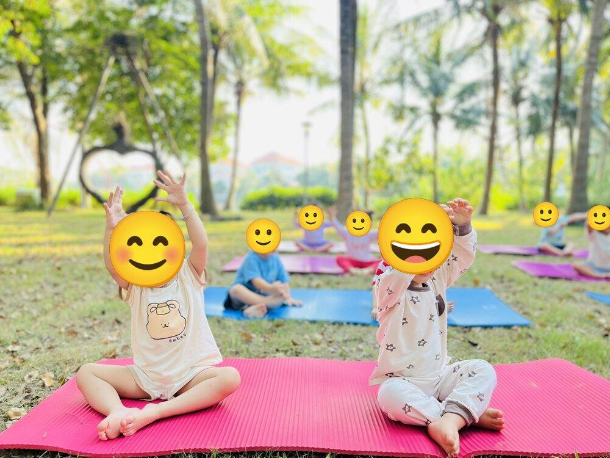
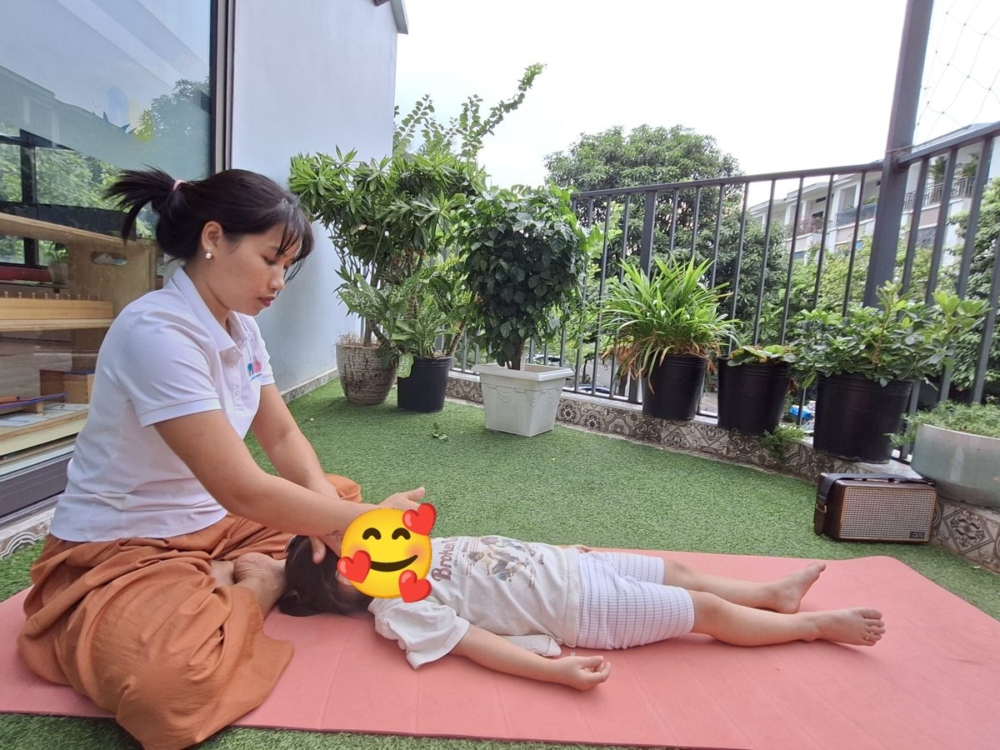

Chánh niệm
Ứng dụng yoga cân bằng phục hồi cho bé hay buồn, thu mình: hướng dẫn tập và đồng hành khi con có dấu hiệu trầm cảm

Con không khóc. Con không quấy. Con chỉ ngồi đó.
Cái bạn ngày trước chạy khắp lớp, giờ ngồi ở mép thảm. Bảo chơi thì lắc đầu. Hỏi gì cũng “con không biết”. Về nhà, con nằm lì, ăn ít, tối thì khó ngủ, sáng thì không muốn dậy.
Người lớn thường nghĩ: trẻ con thì buồn gì lâu. Mai là quên.
Đúng là phần lớn nỗi buồn của con rồi sẽ qua. Nhưng có những nỗi buồn ở lại lâu hơn. Nó lặng lẽ, nên dễ bị bỏ sót nhất. Bài này Sophia viết cho bố mẹ và thầy cô đang lo cho một em bé như thế. Hai phần: cách hướng dẫn con tập yoga, và cách đồng hành cùng con mỗi ngày.
🤍 Điều cô muốn nói trước tiên
Yoga không chẩn đoán được trầm cảm. Yoga cũng không chữa được trầm cảm. Chỉ bác sĩ nhi, bác sĩ tâm thần nhi hoặc chuyên gia tâm lý trẻ em mới đánh giá được con. Yoga là một người bạn đi cùng: giúp thân con nhẹ hơn, hơi thở êm hơn, và giúp con thấy có người lớn ở bên. Thế thôi. Mà thế cũng quý.
Buồn và trầm cảm khác nhau thế nào?
Ai cũng buồn. Con mất đồ chơi, con chuyển trường, bạn thân không chơi với con nữa. Con buồn vài hôm, rồi lại cười. Đó là buồn bình thường, và là một phần của lớn lên.
Trầm cảm thì khác. Nó kéo dài, phần lớn các ngày, từ hai tuần trở lên. Nó lấy đi niềm vui của con với cả những thứ con từng mê. Và ở trẻ nhỏ, nó không phải lúc nào cũng trông giống nỗi buồn. Các tiêu chuẩn chẩn đoán tâm thần hiện nay ghi rõ: ở trẻ em và tuổi mới lớn, tâm trạng có thể là cáu kỉnh thay cho buồn bã. Nhiều bố mẹ chỉ thấy con “dạo này khó chịu quá”.
Trầm cảm ở trẻ không hiếm như mình tưởng. Một khảo sát lớn trên toàn nước Mỹ (Ghandour và cộng sự, The Journal of Pediatrics, 2019) cho thấy khoảng 3 trong 100 trẻ từ 3 đến 17 tuổi đang có trầm cảm, tỉ lệ cao hơn ở tuổi lớn hơn. Ở nước mình chưa có số liệu đầy đủ như vậy cho trẻ nhỏ. Nhưng nỗi buồn của trẻ thì ở đâu cũng có.
Những dấu hiệu cha mẹ, cô giáo nên để ý
Một dấu hiệu, một hôm, chưa nói lên điều gì. Điều cần nhìn là nhiều dấu hiệu cùng lúc, kéo dài hơn hai tuần, và khác hẳn với con ngày thường.
Thấy những điều này, bố mẹ đừng tự kết luận, cũng đừng chờ. Hãy kể với cô giáo, hỏi cô xem ở lớp con thế nào, và đặt lịch gặp bác sĩ nhi để được chuyển tới chuyên gia phù hợp.
🚨 Khi nào cần đưa con đi gặp chuyên gia NGAY
- Con nói muốn chết, muốn biến mất, “giá con không được sinh ra”, kể cả nói như đùa.
- Con tự làm đau mình: cào, cắn, đập đầu, cắt da, hoặc có vết thương lạ mà con giấu.
- Con cho đi đồ chơi quý, nói lời như từ biệt, vẽ hoặc viết nhiều về cái chết.
- Con gần như không ăn, không ngủ, không ra khỏi giường nhiều ngày.
- Con nghe, thấy những điều người khác không thấy, hoặc nói năng rất lạ so với ngày thường.
Lúc đó: ở cạnh con, không để con một mình. Cất các vật sắc nhọn, thuốc men khỏi tầm tay. Đưa con đến khoa nhi hoặc khoa tâm thần nhi của bệnh viện gần nhất trong ngày. Nếu con đang gặp nguy hiểm ngay lúc này, gọi cấp cứu.
Nhiều bố mẹ sợ hỏi thẳng con về chuyện tự làm đau, vì sợ “gợi ý” cho con. Một tổng quan các nghiên cứu (Dazzi và cộng sự, Psychological Medicine, 2014) cho thấy hỏi về ý nghĩ tự tử không làm ý nghĩ ấy tăng lên, và có khi còn giúp người được hỏi nhẹ lòng hơn. Hỏi bình tĩnh. Nghe. Rồi đưa con đi gặp người có chuyên môn.
Phần 1
Hướng dẫn con tập yoga: chậm, nhẹ, và mời chứ không ép
Lớp yoga trẻ em thường vui, ồn, nhiều trò. Với một bạn đang buồn, chừng ấy có khi lại quá nhiều. Nên cô đổi cách dạy một chút.
- Mời, không ép. “Con muốn làm cùng cô, hay ngồi xem trước?” Ngồi xem cũng là đang tham gia. Có bạn xem ba buổi, buổi thứ tư mới bước lên thảm.
- Buổi nào cũng giống buổi nào. Cùng một thứ tự, cùng bài mở đầu, cùng bài kết. Con biết trước điều gì sẽ đến, con bớt phải gồng.
- Ngắn thôi. 10 đến 15 phút. Kết thúc khi con còn muốn, đừng chờ con cạn sức.
- Khen nỗ lực, không khen dáng. “Con giơ tay lên rồi kìa.” Với một bạn đang buồn, giơ được tay lên đã là nhiều.
- Có ánh sáng, có không khí. Mở rèm, mở cửa. Được thì ra sân, ra vườn.
- Nghỉ ngắn, có lời dẫn. Không để con nằm im trong im lặng quá lâu.
Một buổi tập mẫu 15 phút
- Chào nhau, chào gấu (2 phút)
Ngồi trên thảm, ôm thú bông. Hôm nay gấu thấy thế nào? - Đánh thức thân (4 phút)
Mặt trời mọc, con mèo con bò. - Vận động nhẹ, có trò (4 phút)
Cái cây trong gió, đi bộ như các con vật con thích. - Thở (2 phút)
Ngửi hoa thổi nến, hoặc quả bóng thở bên dưới. - Nghỉ và ôm (3 phút)
Ru gấu bông ngủ, cái ôm con bướm, ngồi dậy cùng nhau.
7 bài tập nhẹ cho bé đang buồn
Chọn vài bài con chịu làm. Không cần đủ bảy. Ảnh từ lớp học thật, khuôn mặt các bé được che để bảo vệ các con.
-
1
Ngồi cùng một bạn thú bông
Khi nào: Đầu buổi. Khi con chưa muốn làm gì.
Cách làm: Con chọn một bạn thú bông, ôm vào lòng, ngồi trên thảm của mình. Cô hỏi: “Hôm nay bạn gấu của con thấy thế nào?” Con trả lời, hoặc không. Cả hai đều được. Cô ôm gấu của cô, kể gấu của cô hôm nay hơi mệt.
Điều cô để ý: Nhiều bạn chưa nói được về mình, nhưng nói về con gấu thì dễ hơn. Cô không hỏi dồn. Một cái gật đầu cũng là con đã trả lời rồi.
-
☀️Mặt trời mọc2
Mặt trời mọc, mặt trời lặn
Khi nào: Khi con uể oải, ủ rũ, người như không có sức.
Cách làm: Đứng hoặc ngồi. Hít vào, hai tay vòng từ hai bên lên cao, như mặt trời mọc. Thở ra, hai tay hạ xuống chậm, như mặt trời lặn. Làm 5 lần. Lần cuối, hai tay ôm lấy mình.
Điều cô để ý: Vươn lên và mở ngực là động tác “đánh thức” nhẹ nhàng. Cô không đòi tay thẳng, không đòi đẹp. Con giơ được nửa chừng, cô vẫn nói: “Mặt trời của con lên rồi.”
-
 3
3Con mèo, con bò
Khi nào: Giữa buổi. Khi thân con cứng, vai co, lưng gù.
Cách làm: Chống hai tay, hai gối xuống thảm. Hít vào, bụng võng xuống, ngẩng đầu, con bò kêu “ụm bò”. Thở ra, lưng cong lên, cúi đầu, con mèo kêu “meo”. Làm 6 đến 8 lần, theo nhịp thở của con.
Điều cô để ý: Có tiếng kêu là có tiếng cười. Con đang buồn thường thở nông, ngực khép. Động tác này mở rồi khép cột sống theo hơi thở, rất nhẹ. Đặt gấu lên lưng cho vui, gấu rơi thì nhặt lại.
-

4Cái cây trong gió
Khi nào: Khi con ở trong nhà quá lâu. Nếu được, ra ngoài trời.
Cách làm: Đứng vững hai chân. Hai tay giơ lên cao làm cành cây. Gió nhẹ, cây đung đưa sang trái, sang phải. Gió to, cây lắc mạnh hơn. Gió ngừng, cây đứng yên, thở 3 hơi. Ai muốn thì thử đứng một chân.
Điều cô để ý: Cô thích bài này ngoài trời, có nắng, có gió thật. Vận động nhẹ và ánh sáng ban ngày đều tốt cho tâm trạng. Không cần lâu. Vài phút là đủ.
-
🌸Ngửi hoa, thổi nến5
Ngửi hoa, thổi nến
Khi nào: Bất cứ lúc nào. Khi con khóc, khi con thở dài nhiều.
Cách làm: Giơ một ngón tay làm bông hoa. Hít vào bằng mũi, chậm, như ngửi hoa. Ngón tay thành ngọn nến. Thở ra bằng miệng, thật khẽ, cho ngọn nến lung lay mà không tắt. 5 lần. Thở ra dài hơn hít vào một chút.
Điều cô để ý: Con không cần thở sâu. Chỉ cần thở ra dài hơn một chút. Cô làm cùng con, mắt nhìn con. Bên dưới có quả bóng thở để con tập trên màn hình.
-
🦋Cái ôm con bướm6
Cái ôm con bướm
Khi nào: Khi con thấy một mình, nhớ mẹ, buồn mà không nói được.
Cách làm: Bắt chéo hai tay trước ngực, bàn tay đặt lên hai bên vai, ngón cái móc vào nhau thành con bướm. Vỗ nhẹ, trái rồi phải, chậm như cánh bướm. Thở đều. Một phút.
Điều cô để ý: Đây là cái ôm con tự cho mình được. Có bạn không muốn ai chạm vào. Bài này tôn trọng điều đó, mà vẫn cho con một chút ấm.
-
 7
7Ru gấu bông ngủ, nghỉ ngắn
Khi nào: Cuối buổi. 2 đến 3 phút thôi.
Cách làm: Nằm ngửa, gấu bông trên bụng. Hít vào gấu lên, thở ra gấu xuống. Cô nói chậm, nói liên tục, kể một chuyện ngắn và êm: một chú gấu đi dạo trong rừng có nắng. Rồi con lăn sang một bên, ngồi dậy từ từ.
Điều cô để ý: Với bạn đang buồn, cô không để con nằm im lặng quá lâu một mình với suy nghĩ của mình. Giọng cô là sợi dây. Nghỉ ngắn, có lời dẫn, rồi ngồi dậy cùng nhau.
Video: 2 phút ngồi cùng con
Video ngắn dưới đây là ba bước cô hay làm với một bạn đang buồn: ngồi cạnh, ru gấu bông ngủ 5 vòng thở, rồi cái ôm con bướm. Bố mẹ mở cho con xem, rồi làm cùng con.
Quả bóng thở: bấm để tập cùng con
Con nhìn quả bóng. Bóng to ra thì ngửi hoa, bóng nhỏ lại thì thổi nến. Bạn nhỏ chọn nhịp 3 và 4. Bạn lớn hơn chọn 4 và 6.
Bấm “Bắt đầu” nhé
Phần 2
Đồng hành cùng con: cha mẹ và cô giáo

Phần tập chỉ là mười lăm phút. Phần còn lại của ngày mới là nơi con sống. Ở đó, điều con cần nhất không phải lời khuyên. Là một người lớn ở bên.
Bác sĩ tâm thần Daniel Siegel và Tina Payne Bryson, trong cuốn The Power of Showing Up (2020), viết rằng điều giúp trẻ lớn lên vững vàng là người lớn “có mặt”, để con thấy mình được an toàn, được nhìn thấy, được vỗ về. Không cần cha mẹ hoàn hảo. Cần cha mẹ ở đó, và quay lại sửa khi mình lỡ sai.
Ngồi cùng con, không ép
Ngồi xuống. Gần con, ngang tầm con. Không hỏi dồn “sao thế, sao thế”. Có khi chỉ ngồi cạnh nhau tô màu, xếp hình, gấp quần áo. Bàn tay bận thì lời dễ ra hơn. Nhiều bạn nhỏ kể chuyện khi đang ngồi cạnh mẹ trên xe, khi mẹ không nhìn thẳng vào mặt con.
Con kể thì nghe. Nghe cho hết. Đừng vội sửa, vội khuyên, vội so sánh.
Lời nói: bấm vào từng thẻ để xem cách nói khác
👆 Bấm vào thẻ để lật. Bấm lần nữa để lật lại.
Chạm an toàn
Cái chạm ấm có thể làm dịu cả người lớn lẫn trẻ con. Năm 1992, nhóm của nhà tâm lý học Tiffany Field (Đại học Miami) massage lưng 30 phút mỗi ngày, trong 5 ngày, cho trẻ em và thiếu niên nằm viện vì trầm cảm và rối loạn điều chỉnh. Các con bớt lo âu, ngủ tốt hơn so với nhóm chỉ xem phim thư giãn (Journal of the American Academy of Child and Adolescent Psychiatry).
Nhưng chạm phải là chạm con muốn. Cô luôn hỏi trước: “Cô xoa lưng cho con nhé?” Con lắc đầu thì thôi, cô ngồi cạnh. Chạm nhẹ ở lưng, ở vai, ở bàn tay, bàn chân. Chạm chậm, đều. Bố mẹ có thể xem bài 10 phút massage cuối buổi và Yoga massage trẻ em 15 phút để có thêm động tác.
Nhịp sinh hoạt đều
Với một em bé đang buồn, những thứ lặp lại mỗi ngày giống như tay vịn cầu thang. Không cần nhiều. Cần đều.
- Ngủ và dậy cùng giờ, cả cuối tuần. Bé nhỏ cần nhiều giờ ngủ hơn mình nghĩ. Có bài riêng: Ứng dụng yoga cân bằng phục hồi cho bé ngủ ngon.
- Ra ngoài trời mỗi ngày, nhất là buổi sáng. Đi bộ, chạy, đạp xe, chơi cát. Một tổng hợp các nghiên cứu (Carter và cộng sự, Journal of the American Academy of Child and Adolescent Psychiatry, 2016) cho thấy vận động giúp giảm triệu chứng trầm cảm ở tuổi thiếu niên ở mức vừa phải. Không thay điều trị, nhưng là một phần tốt.
- Ăn đủ bữa, cùng nhau. Bữa cơm có bố mẹ ngồi cùng, tắt tivi, là lúc con được nhìn thấy.
- Bớt màn hình, nhất là buổi tối. Thay bằng một việc làm cùng nhau.
- Một việc nhỏ con làm được mỗi ngày. Tưới cây, cho cá ăn, xếp dép. Làm xong, con thấy mình có ích.
Ở lớp, cô giáo có thể làm gì
- Không gọi tên con trước lớp kiểu “Sao hôm nay con buồn thế?”. Hỏi riêng, nhỏ nhẹ.
- Giao cho con một vai nhỏ: phát gấu bông, bấm chuông kết buổi. Có vai là có chỗ đứng.
- Xếp con gần một bạn hiền, gần cô.
- Ghi lại vài điều cô thấy trong ngày, rồi nói với phụ huynh, nhẹ nhàng, không dán nhãn. “Mấy tuần nay con hay ngồi một mình, cô hơi lo.” Thế là đủ.
Và người lớn cũng cần được đỡ
Chăm một đứa con đang buồn rất mệt. Mẹ lo, mẹ tự trách, mẹ mất ngủ theo. Con lại cảm được hết. Nên người lớn cũng cần thở, cần nghỉ, cần người để kể. Nếu bố mẹ đang căng thẳng, có bài Ứng dụng yoga cân bằng phục hồi cho người căng thẳng, lo âu dành cho người lớn.
Cả năm lớp của con
Sophia hay nhìn một em bé qua năm thể: thân, hơi thở và năng lượng, cảm xúc, suy nghĩ, và phần sâu nhất là niềm vui, sự bình an bên trong. Một bạn đang buồn thì cả năm lớp ấy đều đang nặng. Một tư thế không gỡ được hết. Giấc ngủ, bữa ăn, ánh nắng, hơi thở, cái ôm, người lớn kiên nhẫn ở bên, và khi cần là sự giúp đỡ của bác sĩ, tất cả cùng nhau mới đỡ được con.
Điều cô thấy sau nhiều năm dạy
Có những bạn nhỏ ngồi ngoài thảm rất lâu. Cô để yên. Cô vẫn nói “chào con” mỗi buổi. Vẫn để sẵn một con gấu cạnh thảm của con.
Rồi một hôm, con ôm gấu. Hôm khác, con giơ tay làm mặt trời mọc, nửa chừng thôi. Những thay đổi rất nhỏ. Người lớn bận rộn dễ bỏ qua.
Cô không dám nói yoga làm con hết buồn. Cô chỉ thấy: khi có người kiên nhẫn ngồi cạnh, con bớt cô đơn trong nỗi buồn của mình. Và với nhiều bạn, đó là bước đầu tiên để chịu kể, chịu đi khám, chịu được giúp.
Vài điều cô hay để ý
- Yoga đi cùng, không thay thế. Nếu con đang được bác sĩ hay chuyên gia tâm lý theo dõi, cô hỏi bố mẹ xin ý kiến của họ, và không bao giờ khuyên bỏ thuốc hay bỏ buổi trị liệu.
- Không bắt con “vui lên”. Không ép cười, không ép tham gia trò ồn ào.
- Không ép thở sâu, không nín thở. Thở mạnh có thể làm con chóng mặt, khó chịu. Chỉ cần thở ra dài hơn một chút.
- Nghỉ ngắn, có giọng dẫn. Với bạn đang buồn, im lặng quá lâu có khi làm con chìm vào suy nghĩ buồn hơn.
- Hỏi trước khi chạm. Con nói không là không.
- Không giữ bí mật nguy hiểm. Nếu con kể chuyện bị làm đau, hay ý muốn làm đau mình, cô nói với con: “Chuyện này quan trọng, cô cần báo cho người lớn có thể giúp con.” Rồi báo cho bố mẹ và tìm chuyên gia ngay. Xem lại khi nào cần gặp chuyên gia ngay.
🌟 Điều các con mang về
Ahimsa là không làm tổn thương, kể cả chính mình. Con học rằng buồn thì được, nhưng mình vẫn đáng được chăm sóc.
Santosha là bằng lòng. Không phải giả vờ vui. Là chấp nhận hôm nay mình thế này, và vẫn ngồi đây, thở cùng nhau.
Mưa có lâu đến mấy, mình vẫn ngồi đây với con.
🌿 Thầy cô muốn biết cách giữ một chỗ an toàn cho những bạn nhỏ như thế?
Cách nhận ra một bạn đang thu mình giữa lớp đông, cách mời mà không ép, cách nói chuyện với phụ huynh khi cô thấy điều đáng lo… cô hướng dẫn trong khóa Đào tạo Huấn luyện viên Yoga trẻ em. Bố mẹ muốn hỏi thêm cho con thì nhắn cô nhé.
Đọc thêm: Ứng dụng yoga cân bằng phục hồi cho bé hay cáu giận, khóc nhè, lo lắng, Yoga với gấu bông và Ứng dụng yoga cân bằng phục hồi cho bé ngủ ngon.